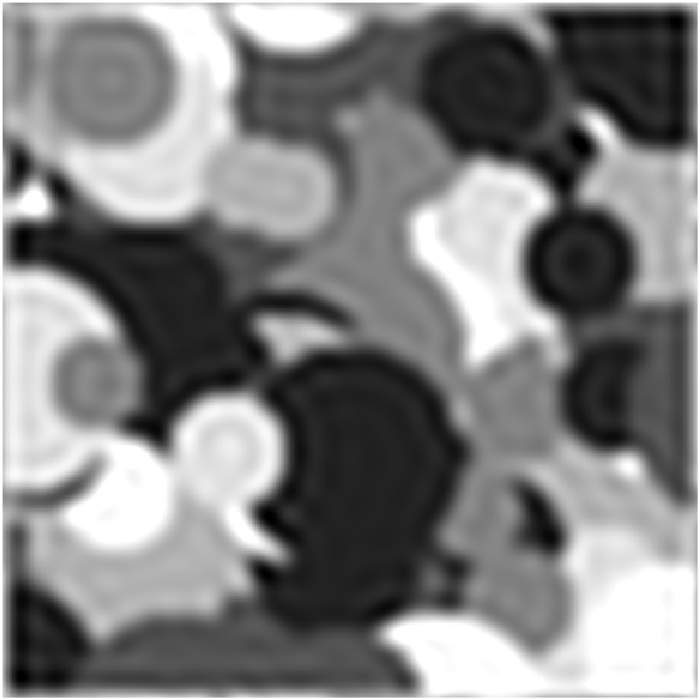
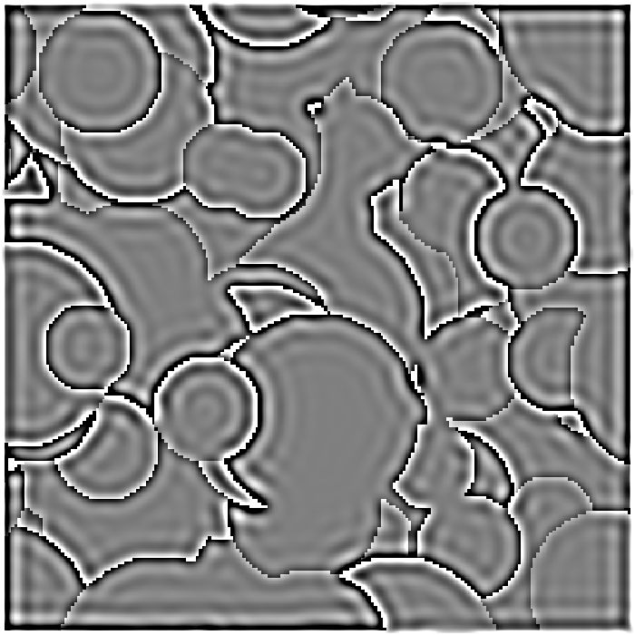
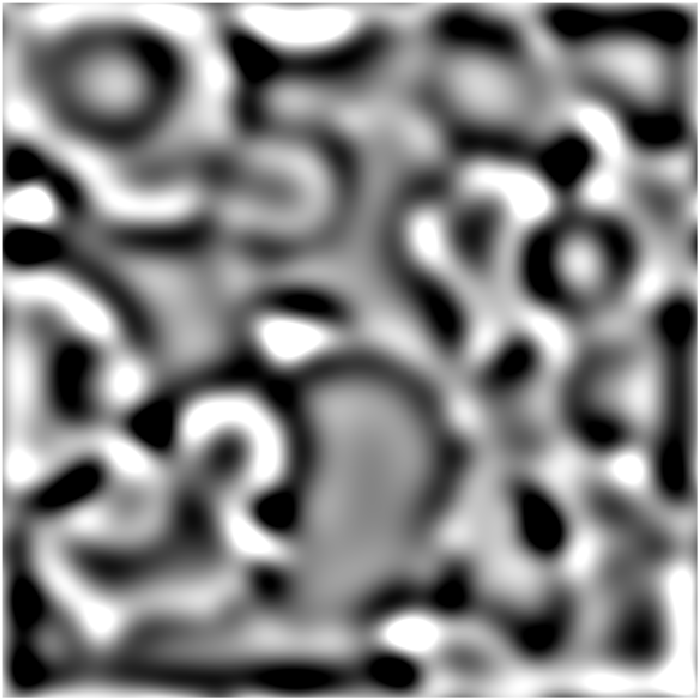
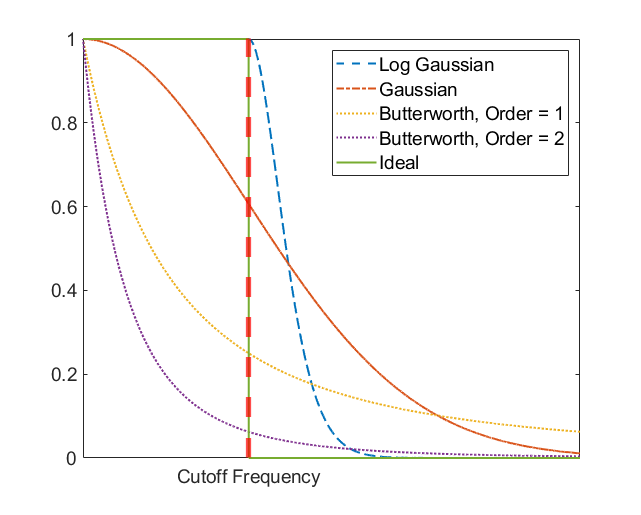
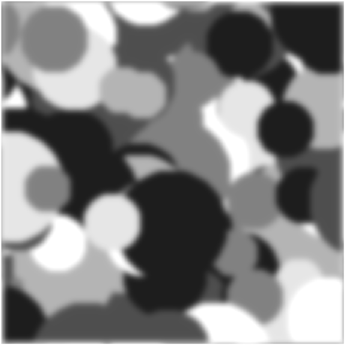
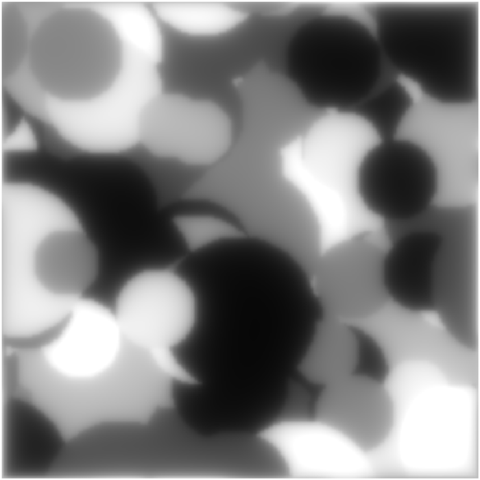
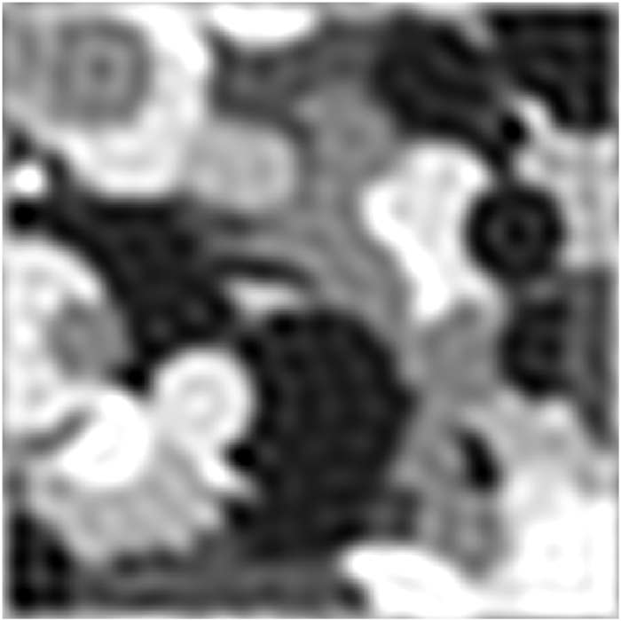
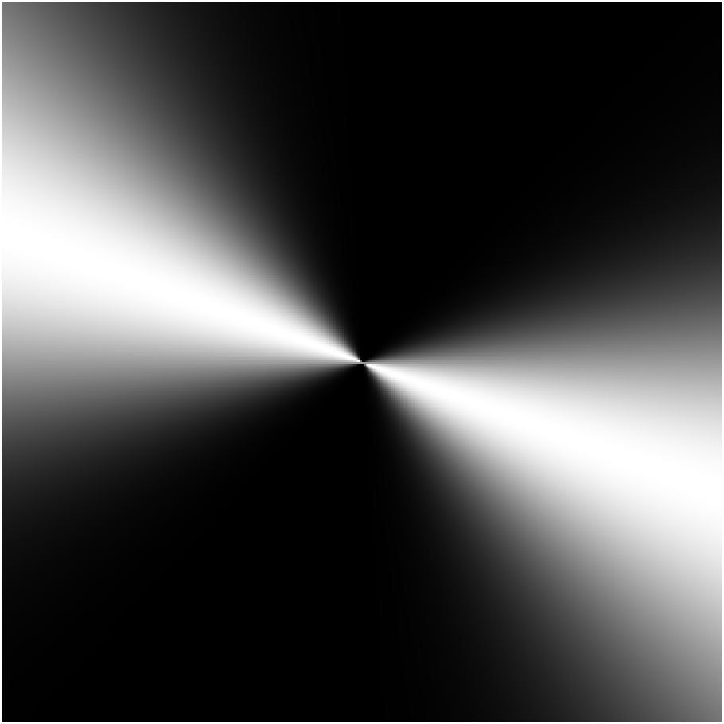
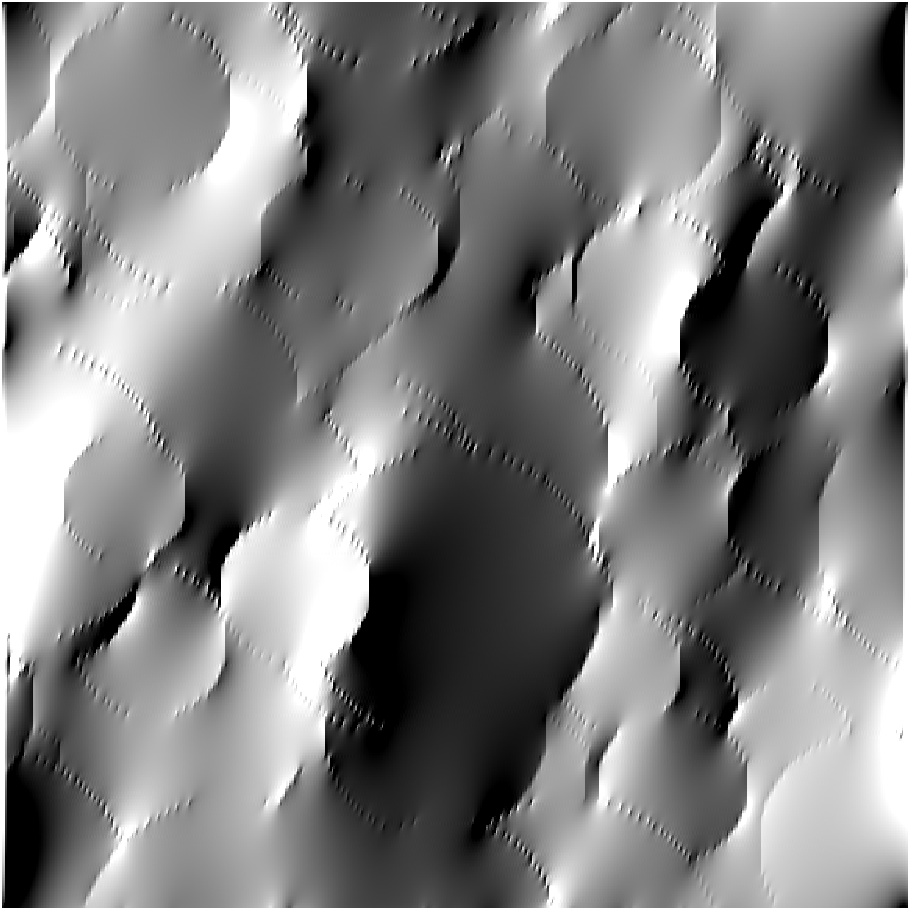
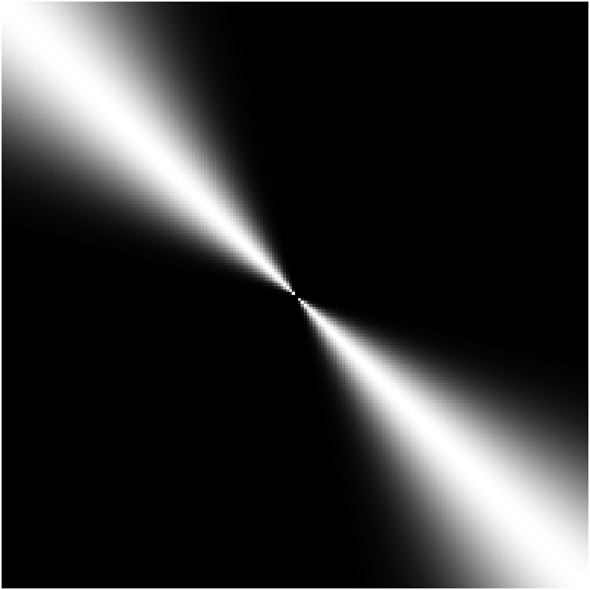

Citation: Wang, G., Alais, D., Blake, R. et al. CFS-crafter: An open-source tool for creating and analyzing images for continuous flash suppression experiments. Behav Res (2022). https://doi.org/10.3758/s13428-022-01903-7
The spatiotemporal attributes of CFS masks & targets have a strong influence on the strength of visual suppression. CFS-Crafter provides the user with the ability to fine-control these aspects of the masks and targets. Hence, it allows the user to tune the stimuli to best suit their experimental design. The modified stimuli can be saved as a CFS-Crafter-Mask .mat file, or exported as an .mp4 video file or .jpg image file, depending on the type of the original stimuli. Click here for details on previewing and saving the modified stimuli.
The change in pixel luminance in the spatial domain can be decomposed into sinusoidal components with different Spatial Frequency. Higher spatial frequency components can be linked to drastic changes in pixel luminance such as the edges, while lower spatial frequency components are usually linked to solid area or area with gradual luminance change.
In order to manipulate the spatial frequency content of the stimuli, CFS-Crafter will firstly apply a 2-D Fast Fourier transform along the two spatial dimensions of the 4D matrix (CFS-Crafter-Mask) or 3D matrix(for Image). Then by applying a 2-D filter in the frequency domain and back-transform the filtered frequency-domain matrix to its spatial domain, a new stimulus with updated spatial attributes is created.
In Modification, the user needs to specify the Type & Methods of the spatial filter they want to apply, as well as the cutoff frequency in cycles/degree(cpd). (And for Butterworth filter, the order also needs to be specified.)
CFS-Crafter offers 3 different types of spatial filters: low-pass, high-pass and band-pass.
The figures below are examples of the outcome of each type of spatial filtering. One frame of the original CFS-Crafter-Mask is shown in Fig.1a. Low-pass spatial filtering will remove the higher frequency component (i.e. the edges) while preserving the lower frequency component (i.e. the gray blobs). The High-pass filtering will preserve the edges and eliminate the lower frequency component, as can be seen in Fig.1c. The Band-pass spatial filtering will preserve the frequency component between the lower & higher cutoff frequency, and eliminate the rest, as shown in Fig.1d.



Different methods (algorithms) of filtering have different profiles, which will lead to differences in the frequency content of modified stimuli. Fig 2 shows how the cross-sections of low-pass filters with different filtering methods differ in their profiles with the same cutoff frequency.

The difference in their profile will lead to different appearances in the filtered image. Ideal Filter preserves all frequency components that are lower than the Cutoff Frequency and eliminates all that are above. Due to this discontinuity in the frequency domain, a ringing artifact will appear, as shown in Fig 3e. Gaussian and Butterworth filters do not have this artifact attributed to their smooth transition, but this smooth transition does lead to a loss in lower frequency content (Fig.3c & Fig. 3d). Log Gaussian Filter introduces a smooth roll-off at the Cutoff Frequency, which mitigates the ringing artifact, and also preserves the lower frequency (Fig. 3b).



The Temporal Frequency of a stimulus refers to the frequency of luminance change in each pixel. Note that this is not equivalent to the Mask Update Rate in Creation or the Image Update Rate in Conversion. The latter two refer to the rate at which a new pattern is presented, and can be seen as coarse approximations of the temporal frequency. However, for each individual pixel, their luminance might stay the same or trend in the same direction for multiple frames (low temporal frequency), or reverse direction from frame to frame (high temporal frequency). Hence, even though the manipulation of the Update Rate can shift the overall temporal content of the stimuli in the desired direction, it cannot guarantee the temporal frequency across all pixels.
To achieve accurate control over the temporal content of the stimuli, CFS-Crafter will apply a 1-D Fast Fourier transform along the fourth dimension of the 4D matrix and then filter out the unwanted frequency components using 1-D filters.
Orientation Filtering is achieved by applying a directional Gaussian filter in the frequency domain. The orientation of the filter determines the direction around which the Gaussian will be constructed, and sigma determines the width of the Gaussian. In CFS-Crafter, orientation indicates the orientation of the pattern (which starts vertically and rotates clockwise), and it is perpendicular to the orientation of the filter, as can be seen in Fig. 4b - Fig. 4e.




If the user wishes to preserve the spatial frequency content (i.e., the low-level spatial features), but destroy the structure of the stimuli, a randomized phase can be added in the frequency domain. This is called Phase Scramble.
Phase Scramble Index should be a number between 0 and 1. The randomized phase matrix (with value ranging from -π to π) will be multiplied by this index before being added to the frequency matrix. The Phase Scramble Index determines the proportion of the original phase that is retained in the modified stimuli. As can be seen in Fig.5b, when the phase scramble is set to 1, no structure from the original stimuli is left. When the index is set to 0.5, there is some original structure remaining.


Frequency Range determines the range of frequencies that will be subjected to the Phase Scramble process. When choosing the Low-pass option, the phase Scramble will only be applied to frequency components that are lower than the Cutoff Frequency, hence as can be seen in Fig.6c, the structure of the higher frequency (i.e. the edges) still remains intact, while the structure of the lower frequency component (i.e. the grayscale blob) is scrambled. The High-pass option only passes the higher frequency components to the phase scramble. Hence, the structure of the lower frequency remains unchanged. When the Band-pass option is selected, phase scramble only applies to the frequency components between the lower and higher Cutoff frequencies, which leaves the original structure in the higher and lower frequency range, as can be observed in Fig.6d, the structure of the edges(i.e. high frequency) and the base colour pattern(i.e. the general shape & location of dark and light blobs) remains the same as the original stimuli, but the frequency in-between lost its structure.


Phase Scramble, Spatial Filtering & Orientation Filtering are all modifications made to the spatial content of the stimuli, which complicates the outcome stimuli when performing together. In CFS Crafter, phase scramble and orientation filtering cannot be performed together. And when spatial filtering is applied, phase scrambling can only be applied to all frequency components to avoid scrambling the frequency that was filtered out.